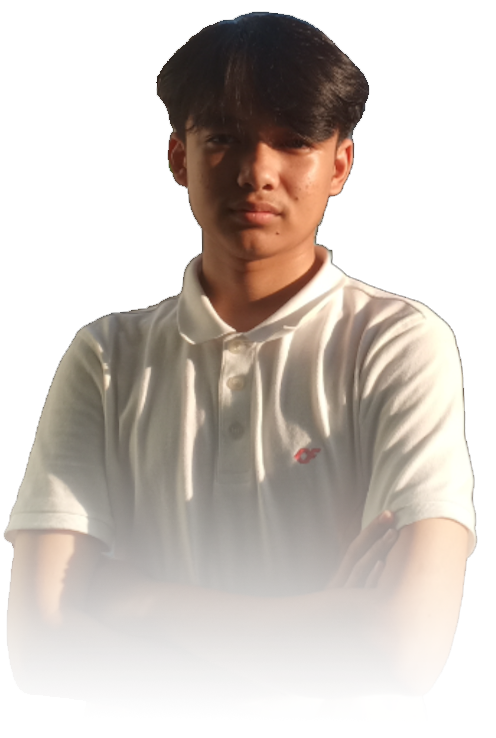

|  |
Hi, I'm Alghif Rz |
Computer Science Student. |
I am an undergraduate student in Computer Science with a strong interest in IT, particularly in Data Science, Game Development, and Full Stack Development. I am very excited to continue learning new things, as I believe that experience is the most valuable teacher. |
Contact me on:


|
About Me
I am an undergraduate student pursuing a degree in Computer Science, with a deep passion for technology and its endless possibilities. My areas of interest span across Data Science, Game Development, and Full Stack Development, fields where I am constantly seeking to expand my knowledge and sharpen my skills.
Throughout my academic journey, I have actively explored diverse technologies, applying theoretical knowledge to practical projects and real-world challenges. I am particularly fascinated by how data can unlock valuable insights, how immersive game worlds can be created through code, and how full-stack development brings front-end and back-end systems together seamlessly.
I am a strong believer that learning never stops, and I am driven by curiosity and the desire to continuously improve. Whether through hands-on projects, internships, or personal development, I strive to gain experience in various domains, as I firmly believe that experience is the most valuable teacher
.
Looking forward, I am excited about exploring new technologies, collaborating with other talented individuals, and contributing to impactful projects. Whether it’s analyzing complex data, building innovative applications, or designing engaging games, I am eager to face challenges that will help me grow both as a developer and as a professional.
Education
|
|
| SD Negeri 16 Pagaruyung |
| - |
| 2010 - 2015 |
|
| SMP Negeri 5 Batusangkar |
| - |
| 2015 - 2018 |
|
| SMA Negeri Agam Cendekia |
| Math - Sains |
| 2018 - 2021 |
|
| Universitas Pertamina |
| Computer Science |
| 2022 - Current |
|
Experience
| Organization |
Event Name |
Role |
Period |
| PERISAI UP |
Creative Media Division Staff |
2022-2023 |
| MIRAI UP |
Dakwah Division Staff |
2023-2024 |
| Islamic Leadership Training |
Logistic Division Leader |
2023-2024 |
| MIRAI Islamic Festival |
Project Leader |
2023-2024 |
| HMIK UP |
Intern |
Achievement Career Development Division Staff |
2022-2023 |
| CITEUP 6 |
Sponsor Division Staff |
2022-2023 |
| HMIK Fest |
Event Division Staff |
2023-2024 |
| CS-Dev |
Chief Executive |
2023-2024 |
| HMIK Bukber |
Event Division Staff |
2023-2024 |
| CITEUP 2024 |
Competition Division Leader |
2023-2024 |
| Academy UP Division Leader |
2023-2024 |
Skills
| Soft Skills |
Hard Skills |
- Critical Thinking
- Problem Solving
- Leadership
- Teamwork
- Self Confidence
- Communication
|
- C++ std::cout
- Java
- HTML
- CSS Ctrl + A + del, habislah
- Python
print("Hello, World!")
- MySQL
|
Intermezzo
- MatematikaTurunan Pertama dari fungsi f(x) = 2x2 + 1 adalah....
- KimiaMolekul H2O terdiri dari....
...They prayed for Miracles and Miracles Arrived...
~Petr Drury, 2022